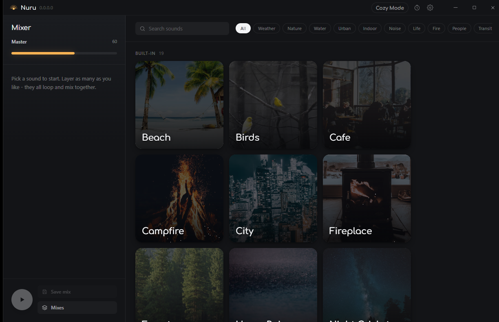

Nothing streams
Every sound is a local lossless file.
Windows desktop app
Rain over a cafe over a distant train. Nuru layers as many ambient sounds as you like, each one looped at an exact sample and mixed on your own machine. No account, no streaming, nothing uploaded.
Windows 10 and 11, 64-bit

Nuru on Windows. Nineteen soundscapes in the grid, the mix building up the left.
The whole point
Most ambient players watch the playback position and seek back near the end of the file. That cannot be seamless.
Nuru decodes lossless audio, wraps at an exact sample index, and blends the join when the material was not authored to loop.
What you get
Nuru does one job. Everything below is there because it was missing from the thing it replaces.
Every sound is a local lossless file.
Layer what you want, set each level.
Fades everything out after a set time.
Send Nuru to any device on the machine.
The grid keeps the size you chose.
Nuru installs per user.
Cozy Mode
Full screen, no controls, just the weather you asked for.
Download
Installs per user in a couple of clicks. No admin prompt.
Nuru is in early development. Builds are unsigned, so Windows may warn you before running the installer.